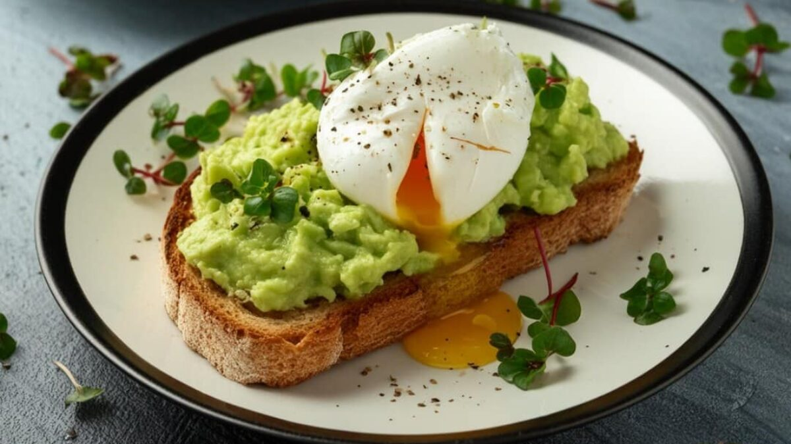
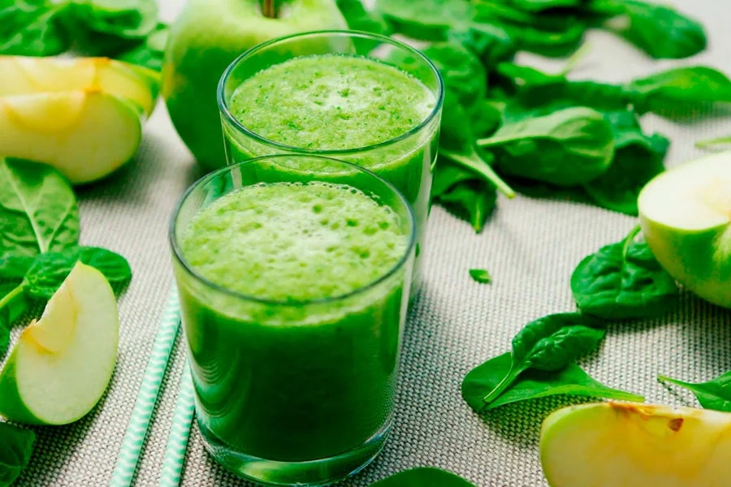

Recetas Saludables Fáciles de Preparar
Descubre platillos deliciosos y nutritivos para el día a día.
Ensalada fresca de quinoa y aguacate

Esta ensalada es una excelente opción para un almuerzo ligero y nutritivo. La quinoa es rica en proteínas vegetales, mientras que el aguacate aporta grasas saludables.
Ingredientes:
- 1 taza de quinoa cocida
- 1 aguacate maduro
- 1 tomate grande
- Jugo de 1 limón
- Sal y pimienta al gusto
- Hojas de albahaca fresca (opcional)
Preparación:
- Cocina la quinoa según las instrucciones del paquete.
- Corta el aguacate y el tomate en cubos pequeños.
- En un tazón grande, mezcla la quinoa cocida, el aguacate, el tomate y las hojas de albahaca.
- Exprime el jugo de limón sobre la mezcla y sazona con sal y pimienta al gusto.
- Revuelve todo suavemente y sirve fría o a temperatura ambiente.
Tostadas de aguacate con huevo pochado
Las tostadas de aguacate con huevo pochado son un desayuno perfecto para comenzar el día con energía y nutrientes esenciales.
Ingredientes:
- 2 rebanadas de pan integral
- 1 aguacate maduro
- 2 huevos
- Sal y pimienta al gusto
- Un chorrito de aceite de oliva
Preparación:
- Tosta las rebanadas de pan integral en una tostadora o sartén.
- Aplasta el aguacate y unta sobre las tostadas.
- En una sartén con agua caliente, pocha los huevos durante unos 3-4 minutos o hasta que estén cocidos a tu gusto.
- Coloca un huevo pochado sobre cada tostada y sazona con sal, pimienta y un chorrito de aceite de oliva.
- Sirve inmediatamente.
Batido verde detox
Este batido es una excelente forma de obtener una dosis de vitaminas y minerales. Ideal para comenzar el día o como snack entre comidas.
Ingredientes:
- 1 taza de espinacas frescas
- 1 plátano maduro
- 1 manzana verde
- Jugo de 1 limón
- 1/2 taza de agua o leche de almendra
- Hielo al gusto
Preparación:
- Coloca las espinacas, el plátano, la manzana y el jugo de limón en una licuadora.
- Añade el agua o la leche de almendra y el hielo.
- Licúa todo hasta obtener una mezcla suave y homogénea.
- Sirve inmediatamente y disfruta de este batido refrescante.
Consejos adicionales para una alimentación equilibrada
- Prefiere alimentos frescos y naturales, como frutas, verduras y granos integrales.
- Limita el consumo de azúcares y grasas saturadas, optando por fuentes de grasas saludables como el aguacate y el aceite de oliva.
- Come porciones moderadas y distribuye las comidas durante el día para evitar la sensación de hambre.
- Incluye una variedad de alimentos en tu dieta para asegurar que obtienes todos los nutrientes necesarios.
Las recetas presentadas son solo algunas opciones que puedes incorporar en tu rutina diaria. Recuerda que una dieta saludable debe ser variada, balanceada y adaptada a tus necesidades y preferencias personales.